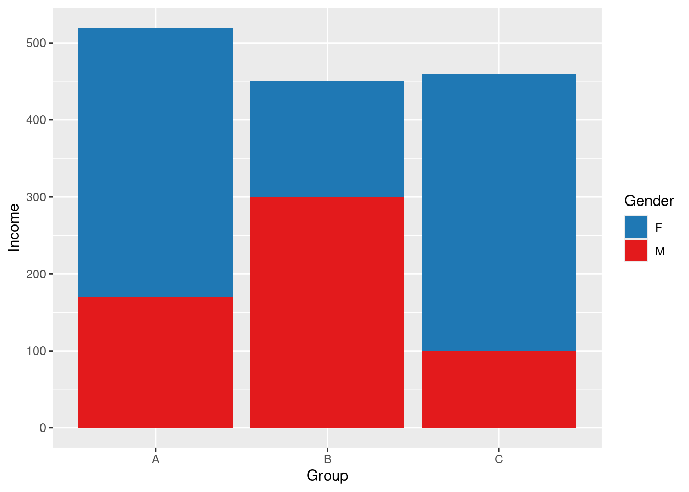
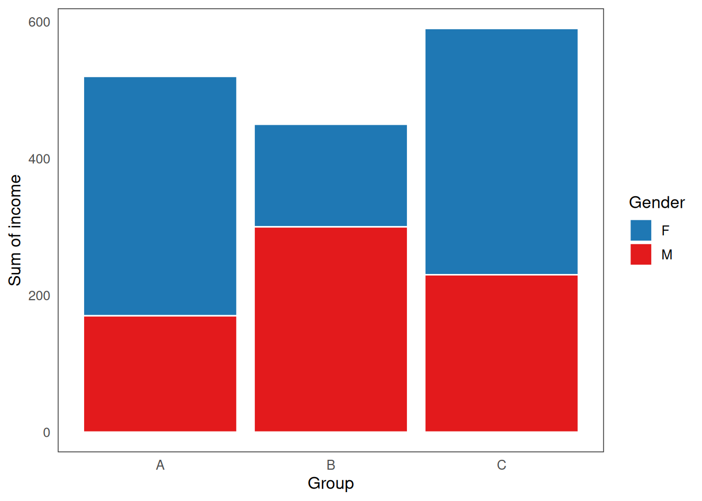

3 Design
3.0.1 User Profile
The profile of average user can also differ significantly, across systems and research areas. For example, some areas of interactive data visualization and HCI make no assumptions about the user’s level of experience or motivation, whereas others assume a highly motivated “expert” user with a sufficient level of domain knowledge (Dimara and Perin 2019).
While designing my system, I have attempted to
3.1 Implementation
The example code chunks in this section are written in both R and TypeScript. The reason for this is that, while I would prefer to use R for everything due to its tight integration with RMarkdown, some of the concepts are much easier to explain in a language with static typing features like TypeScript (particularly, type annotations and interfaces). However, since the examples relate to plotting and some can be improved by showing graphical output/plots, I also wanted to use (base) R for plotting. So, where graphical output is important, the code chunks are written in R, and, where the code itself is the main focus, they are written in TypeScript. I hope this bilingualism is not too confusing and have tried to use only the basic features of each language to make the examples clear.
3.1.1 Factors
Factors provide a way to partition the data into multiple disjoint parts.
3.1.1.1 Product factors
We can combine a factor with \(j\) levels and another factor with \(k\) levels into a product factor with up to \(j \cdot k\) levels.
I independently discovered a formula similar to (Wickham 2013):
\[i_{\text{product}} = i_1 + i_2 \cdot \max(j, k)\]
3.1.2 Reducers
(Gray et al. 1997) came up with OLAP data cube
3.1.3 Scales
A fundamental task when visualizing data is translating values from the coordinates of the data to something that can be actually displayed on the screen. In most data visualization system, this is the job of scales. While there exists is a fair amount of literature on the theoretical properties of scales [SEE INTRODUCTION], there is much less written about the actual details of implementing scales in concrete data visualization systems. As such, the following section is based largely on how scales have been implemented in other data visualization codebases, such as the ggplot2 R package (Wickham 2016) or d3-scale module of D3 (Observable 2024), as well on personal experience with.
3.1.3.1 Overview
From a high-level perspective, we can think of a scale as just a function \(s: D \to V\), which translates values from the data domain \(D\) to some visual attribute (co)domain \(V\), which could be, for example, the x- or y-position, length, area, radius, or color.
The most typical case is where both \(S\) and \(D\) are subsets of the real numbers:
\[s: [a, b] \to [j, k] \qquad \text{where } a, b, j, k \in \mathbb{R}\]
For example, suppose our data takes values in the range from 1 to 10 and we want to plot it along the x-axis within a plotting region which is 800 pixels wide. Then, our scale is simply:
\[s: [1, 10] \to [0, 800]\]
Now, there can be many potential functions that fit this signature. One particularly nice and simple candidate is the following function:
\[s(x) = j + \frac{x - a}{b -a} \cdot (k - j)\]
or, with concrete values substituted for the variables:
\[s(x) = 0 + \frac{x - 1}{10 - 1} \cdot (800 - 0) \\ \implies s(x) = \frac{x - 1}{9} \cdot 800\]
This function is a simple linear map, which acts on the data in the following way:
- \(s(1) = (1 - 1) / 9 \cdot 800 = 0\)
- \(s(10) = (10 - 1) / 9 \cdot 800 = 800\)
- \(s(x) \in (0, 800)\) for any \(x \in (1, 10)\)
That is, the function maps the data value 1 to pixel 0 (left border of the plotting region), value 10 to to pixel 800 (right border of the plotting region), and any value in between 1 and 10 to the interval 0 to 800, proportional to how far within the data range it is located.
We can easily implement the function by simply translating the formula to code:
function scale(x: number, a: number, b: number, j: number, k: number): number {
return j + ((x - a) / (b - a)) * (k - j)
}
// And indeed, this works as expected
console.log(scale(5.5, 1, 10, 0, 800))## 4003.1.3.2 Limits of modeling scales as simple functions
Simple scale functions like the one shown above can work fine for simple data visualization systems. However, once we want to add more features, this design can become prohibitive. For example, what if we want to:
- Expand the scale limits
- Apply non-linear transformations
- Pan, zoom, reversem, or otherwise modify the scale interactively
- Scale discrete data
Let’s take the first point as a motivating example. Consider what happens to data points at the limits of the data range with our “simple” scale function:
x <- 1:10
y <- rnorm(10, 0, 5)
col <- ifelse(1:10 %in% c(1, 10), "indianred", "grey80")
plot(x, y, col = col, cex = 3, xaxs = "i")
The plot above shows values scaled using the simple linear mapping described above along the x-axis, i.e. \(s: [1, 10] \to [0, 800]\). Notice that, since the position of the points representing the values 1 and 10 get mapped to pixel values 0 and 800 (the left and right border of the plot), only half of each point is visible.
To address this, most data visualization systems automatically expand the range of the domain by some pre-specified percentage:

(in R, this is approximately 4% at each end of the axis, see xaxs in ?graphicss::par)
We could achieve the same effect by adding an extra argument to the scale function:
function scale(
x: number,
a: number,
b: number,
j: number,
k: number,
w: number
): number {
return j + (w / 2 + ((x - a) / (b - a)) * (1 - w)) * (k - j);
}
console.log(scale(1, 1, 10, 0, 800, 0.1));
console.log(scale(5.5, 1, 10, 0, 800, 0.1));
console.log(scale(10, 1, 10, 0, 800, 0.1));## 40
## 400
## 760The additional argument w allows us to specify that we want to expand the range by 10% (5% upper and lower limit, respectively), such that the data values of 1 and 10 are no longer translated to 0 and 800 pixels but instead closer to the center of the plotting area (40 and 760 pixels, respectively).
However, if we start piling on additional arguments, the function may quickly become unwieldy and hard to reason about. Further, we also may want to persist or modify some of the values during runtime (such as when panning or zooming). Thus, it becomes clear that a more structured approach is needed.
3.1.3.3 Solution: Two-component scale system
The formula for the linear mapping may provide hints as to how we might go about breaking the scaling function apart into smaller, more manageable components. If we look at the formula closely, we can re-frame the function as a composition of two simpler functions:
\[s(x) = \color{steelblue}{j +} \color{indianred}{\frac{x - a}{b -a}} \color{steelblue}{\cdot (k - j)}\]
That is, the scale function consists of:
- A normalize function \(\color{indianred}{n: D \to [0, 1], \qquad n(x) = (x - a) / (b - a)}\)
- An unnormalize function \(\color{steelblue}{u: [0, 1] \to V, \qquad u(y) = j + y \cdot (k - j)}\)
Put simply, the normalize function \(n\) translates the data values \(D\) to a percentage \([0, 1]\), and the unnormalize function \(u\) takes the percentage and translates it into the space of the visual attribute \(V\). The scale function is then simply the composition of these two functions:
\[s(x) = \color{steelblue}{u(} \color{indianred}{n(x)} \color{steelblue}{)}\]
This two component system has a big advantage in that it allows for a clean separation of concerns. Specifically, the unnormalize function only needs to know how to translate values from \([0, 1]\) to the space of its own visual attribute (such as x-axis position); it does not need to know what data it is mapping to the attribute or how it’s been normalized. Conversely, the normalize function does not need to know where the data it’s normalizing will be mapped to.
Also note that, technically, there isn’t anything special about the \([0, 1]\) interval as the intermediate domain: any finite subset of \(\mathbb{R}\) will work. However, the specific interval \([0, 1]\) is convenient, both in terms of interpretation and implementation, as will be discussed later.
Finally, so far I have referred to the normalize and unnormalize functions. This framing lends itself to a nice correspondence between the mathematical definition and the code implementation. However, in practice, we could also just as well speak of the domain and codomain objects or classes, as we will see in the next section. The important point is that, no matter whether the two components are functions or objects, they are each responsible for translating values in their domain to and from the interval \([0, 1]\).
3.1.3.4 Past implementations of scales
Implementing scales as composition of two components is fairly standard across data visualization packages. For example, the D3 library (Bostock, Ogievetsky, and Heer 2011) implements scales in a functional style, with the values representing the data domain and the visual (co)domain being provided as tuples or arrays of values, either during initialization or at some later point. For illustration, here are some examples from the oficial documentation (Observable 2024):
const x = d3.scaleLinear([10, 130], [0, 960]);
x(20); // 80
const x = d3.scaleLinear().domain([10, 130]);Internally, specialized functions are then used to translate from the domain to the codomain, such as the normalize() and scale() functions for continuous and discrete/ordinal domains, respectively, and various interpolate() functions for codomains.
Similarly, ggplot2 (Wickham 2016) implements each subtype of the Scale class with limits and palette properties, each corresponding roughly to the data domain and the visual codomain (“roughly”, because the x- and y-position are treated slightly differently, due to being passed through coordinate systems). Internally, the package uses the rescale function from the scales package (Wickham, Pedersen, and Seidel 2023) to map data to \([0, 1]\) and then the palette function is responsible for mapping these normalized values to the visual attribute. For illustration, here’s the full definition of the map method on the ScaleContinuous class (I’ve added my own comments for clarity):
map = function(self, x, limits = self$get_limits()) {
# Limits are just a tuple, rescale maps x to [0, 1]
x <- self$rescale(self$oob(x, range = limits), limits)
uniq <- unique0(x)
# Palette is a function which returns a vector of attribute values
pal <- self$palette(uniq)
scaled <- pal[match(x, uniq)]
ifelse(!is.na(scaled), scaled, self$na.value)
}3.1.3.5 Proposed model of scales
The important thing to note is that both D3 and ggplot2 treat the data domain and the visual attribute codomain as fundamentally different objects. In D3, different functions are used to translate from \(D \to [0, 1]\) and from \([0, 1] \to V\), and, in ggplot2, while limits is a simple vector/tuple, palette is a function. This adds additional complexity, since we have to use a different mental model when thinking about each component. However, is this added complexity necessary?
I propose a simpler model of scales which implements both the domain and codomain as objects of the same type (Expanse). Specifically, here is a simplified version of the Scale interface:
Here, T represents the type of the data domain, and U represents the type of the visual attribute codomain.
Then, using this interface, we can make use of the following two functions:
function pushforward<T, U>(scale: Scale<T, U>, value: T): U
function pullback<T, U>(scale: Scale<T, U>, value: U): TThe pushforward function can be push values forward through the scale, first through its domain and then its codomain, and the pullback function can be used to pull values back, first through its codomain and then through its domain.
3.1.4 Expanses
Expanses provide a way to translate between data values and relative proportions of graphical encodings, such as the x- and y-axis position, area, or size. Formally speaking, an expanse is a set of some possible data values \(D\), together with a pair of maps:
- A normalize map \(n: D \to \mathbb{R}\)
- An unnormalize map \(u: \mathbb{R} \to D\)
This may seem rather abstract, however, what might make things clearer is that most of the time we will be dealing with specific subsets of \(D\) and \(\mathbb{R}\): observed data \(D^* \subseteq D\) and percentages \(p^* \in [0, 1] \subset \mathbb{R}\). Then, provided that the expanse has been trained on the observed data values and no adjustments such as expanding margins, zooming, or panning have been made:
- The normalize map translates observed data to percentages: \(n(d^*) \to [0, 1]\)
- The unnormalize map translates percentages to observed data: \(u(p^*) \to D^*\)
3.1.4.1 Zero and One
The maps may also take in and return values outside of \(D^*\) and \([0, 1]\), if adjustments have been made. For instance, in most data visualization packages, x- and y-axis limits are by default expanded some percentage beyond the range of the observed data to avoid the maximum and minimum datapoints from overlapping with the limits. For example, in base R:
set.seed(12345)
x <- rnorm(5)
y <- rnorm(5)
par(mfrow = c(1, 2))
plot(x, y)
plot(x, y, xaxs = 'i', yaxs = 'i') 
Figure 3.1: Expanding axes. By default, axes in base R plot() function are expanded 4% beyond the range of the data (left). Otherwise, datapoints on the limits of their respective scales end up overlapping with the plot borders (right).
Thus, upon normalizing the minimum and maximum data values, the expanse should return values other than \(\{0, 1\}\). Likewise, to support user interactions such as zooming and panning, the expanses may accept and return values outside of \(D^*\) and \([0, 1]\).
Zooming and panning should be orthogonal to the underlying data type, such that user can interact with the plots the same way1, no matter whether their axes are continuous, discrete, or some combination of the two. To this end, I introduce two parameters representing the normalized value (\(p\)) of the minimum and maximum data point, called zero and one respectively. These parameters are agnostic to the underlying data type, such that if we have the data type-specific maps \(n'\) and \(u'\), the complete normalize and unnormalize maps are:
\[n(d) = \text{zero} + n'(d) \cdot (\text{one} - \text{zero})\] \[u(p) = u' \bigg(\frac{p - \text{zero}}{\text{one} - \text{zero}} \bigg)\]
To simplify, here’s what effect setting the two parameters to specific values has:
| Zero | One | Effect |
|---|---|---|
| 0.05 | 0.95 | Expands the margins by ~5% (actually 5.555…% since 0.05 / 0.9 = 0.0555…) |
| 0.05 | 1.05 | Shifts the expanse ‘up’ by 5% (e.g. moves x-axis 5% right) |
| -0.50 | 1.50 | Zooms into the middle 50% of the expanse (25 percentile goes to 0 and 75th to one) |
3.1.4.2 Expanse Interface
There are also other behaviours that expanses should support. For instance, we may want to be able to reset the expanse to defaults, retrain when the underlying data changes, and return nicely formatted breaks. How these behaviours are implemented, as well as other types of behavior, may be specific to the underlying data type. Overall, expanse interface may look something like this:
interface Expanse<T> {
normalize(value: T): number
unnormalize(value: number): T
defaultize(): this
setZero(zero: number, default: boolean): this
setOne(one: number, default: boolean): this
freezeZero(): this
freezeOne(): this
move(amount: number): this
expand(zero: number, one: number): this
retrain(values: T[]): this
breaks(n?: number): T[]
}3.1.4.3 Continuous Expanses
The continuous expanse has as its underlying set \([\min, \max] \subseteq \mathbb{R}\). To understand how it works, let’s build it step by step.
We start with the basic normalizing function:
- \[n(d) = \frac{d - \min}{\max - \min}\]
This function takes some data value \(d \in [\min, \max]\) and transforms it to \([0, 1]\). Most data visualization systems use a function like this at some step of the scaling processs - see scales::rescale and D3 normalize.
This may work well for typical linear scales. However, we may also want to apply some transformation \(f\), such as square root or log. Then, to ensure that the observed data values still get normalized to \([0, 1]\), we need to apply the transformation to both \(d\) and the limits:
- \[\frac{f(d) - f(\min)}{f(\max) - f(\min)}\]
Finally, as was discussed in EXPANSES, we want to be able to incorporate the zero and one paramaters, leading to the final normalizing function:
\[n(d) = \text{zero} + \frac{f(d) - f(\min)}{f(\max) - f(\min)} \cdot (\text{zero} - \text{one})\]
To obtain the unnormalizing function, we can simply invert the normalizing function:
\[u(p) = f^{-1} \bigg\{ f(\min) + \frac{p - \text{zero}}{\text{one} - \text{zero}} \cdot \big[ f(\max) - f(\min) \big] \bigg\}\]
The function transforms \(x\) to a percentage value \(p \in [0, 1]\), provided \(x\) is within \([\min, \max]\). The value \((\max - \min)\) is also sometimes called the range (not to be confused with D3 range).
We can invert the normalizing function and obtain the unnormalizing function, which is, for some percentage \(p \in [0, 1]\):
\[u(p) = \min + p \cdot (\max - \min)\] returns a value within the \([\min, \max]\) range, corresponding to the proportion of the maximum possible distance (range) from the origin (\(\min\)). For example, \(u(0.5)\), returns a value that is located halfway between the limits.
We can implement a simple continuous expanse like so:
function identity<T>(x: T) {
return x;
}
function expanseContinuous(min = 0, max = 1) {
const [zero, one] = [0, 1]
const [trans, inv] = [identity, identity]
return { min, max, zero, one, trans, inv,
range() {
return this.max - this.min;
},
transRange() {
const { min, max, trans } = this;
return trans(max) - trans(min);
},
normalize(x: number) {
const { min, zero, one, trans } = this;
const normalized = (trans(x) - trans(min)) / this.transRange();
return zero + normalized * (one - zero);
},
unnormalize(p: number) {
const { min, zero, one, trans, inv } = this;
return inv(trans(min) + ((p - zero) / (one - zero)) * this.transRange());
},
};
}
const expanse1 = expanseContinuous(1, 10);
console.log(expanse1.normalize(5));
console.log(expanse1.unnormalize(0.5))## 0.4444444444444444
## 5.5The functions \(n, u\) have several interesting properties. First off, they are inverses to each other and form an isomorphism, i.e. \(u = n^{-1}\) and \(n = u^{-1}\) such that \(u(n(x)) = x\) and \(n(u(p)) = p\). This also means that each function is a 1-to-1 mapping or bijection. In plain words, this means that we cannot get the same percentage by normalizing two different values and vice versa. As a result, we can keep switching between the normalized and unnormalized representations without losing any information:
3.1.4.3.1 Linearity
Another important thing to note is that, while these types of normalizing functions are often called “linear” (e.g. scaleLinear() in D3), since their graphs form a straight line, they should not be confused with “linear functions”, since they do not satisfy the properties of linear functions, namely:
- Additivity: \(\text{normalize}(x + c) \neq \text{normalize}(x) + \text{normalize}(c)\)
- Homogeneity of degree 1: \(\text{normalize}(c \cdot x) \neq c \cdot \text{normalize(x)}\).
To illustrate, additivity does not hold when \(\min \neq 0\) because:
\[\frac{(x + c) - \min}{(\max - \min)}\] \[= \frac{x - \min}{\max - \min} + \frac{c}{\max - \min}\] \[\neq \frac{x - \min}{\max - min} + \frac{c - \min}{\max - \min}\]
The same can be easily shown for the \(\text{unnormalize}\) map and for homogeneity.
Technically, this is due to a confusion between the definition of a “linear function” and a “linear polynomial”. The appropriate term to use would actually be “affine transformation.”
Either way, if the minimum is not 0, we cannot expect the following to be equal:
Or the following to be equal:
However, if we keep in mind the fact that the normalizing function calculates the proportion of distance from the origin, we can see that the function in fact behaves linearly within the context of its limits.
For example, consider the range \([1, 10]\). The value \(5\) is \(4\) units away from the lower limit, i.e. \(5 - 1 = 4\), so we can represent it, for example, as the sum of a value that is 3 units away and another that is one unit away, \(n(5) = n(4) + n(2)\):
Likewise, again because \(5\) represents the distance of \(4\) units and \(3\) of \(2\), we can expect \(n(5) = 2 \cdot n(3)\):
3.1.4.3.2 Transformations
We can apply transformations to continuous expanses by transforming their limits. The outcome of this is that \(\min\) and \(\max\) still get mapped to \(0\) and \(1\) however, the graph of the function is no longer linear. Suppose we have non-linear function \(f\), along with an inverse \(f^{-1}\). Then:
\[n(x) = \frac{f(x) - f(\min)}{f(\max) - f(\min)}\] \[u(p) = f^{-1} \bigg\{f(\min) + p \cdot \big[ f(\max) - f(\min) \big] \bigg\}\] For example, here’s how we could apply the transformation \(\bigg( f(x) = \sqrt{x}, \; f^{-1}(x) = x^2 \bigg)\) in code:
Transformations such as these can be useful in two ways. First, sometimes we may be able to better see trends in the data when the data has been appropriately transformed. This is the case, for example, when plotting data which varies across orders of magnitude. In this case it may be useful to apply \(\log\)-transformation. Second, transformations can also be helpful in situations where some graphical attributes are not perceived linearly. For example, when judging differently sized objects, viewers tend judge magnitude based on area rather than side or radius. As such, when drawing objects such as points or squares it can be helpful to apply square root as the inverse transformation. The idea is that, if one point has a data value that is \(c\) times bigger than another, it will have \(\sqrt{c}\) times bigger radius and \(c\) times bigger area. Note that we are talking about the inverse transformation here, i.e. the transformation affecting the unnormalizing function.
One thing to note is that the proportionality of the square-root transformation holds only when \(\min = 0\). Otherwise:
\[\sqrt{(\min)^2 + cp \cdot [(\max)^2 - (\min)^2]}\] \[= \sqrt{c} \cdot \sqrt{(\min)^2/c + p \cdot [(\max)^2 - (\min)^2]}\] \[\neq \sqrt{c} \cdot \sqrt{(\min)^2 + p \cdot [(\max)^2 - (\min)^2]}\]
This is a problem in the existing packages. For example:
3.2
References
The one exception may be panning barplots and histograms, where the y-axis upper y-axis limit may change but the lower should be fixed at 0, such that panning may shrink or stretch the bars, but not “lift” them up or move them down.↩︎